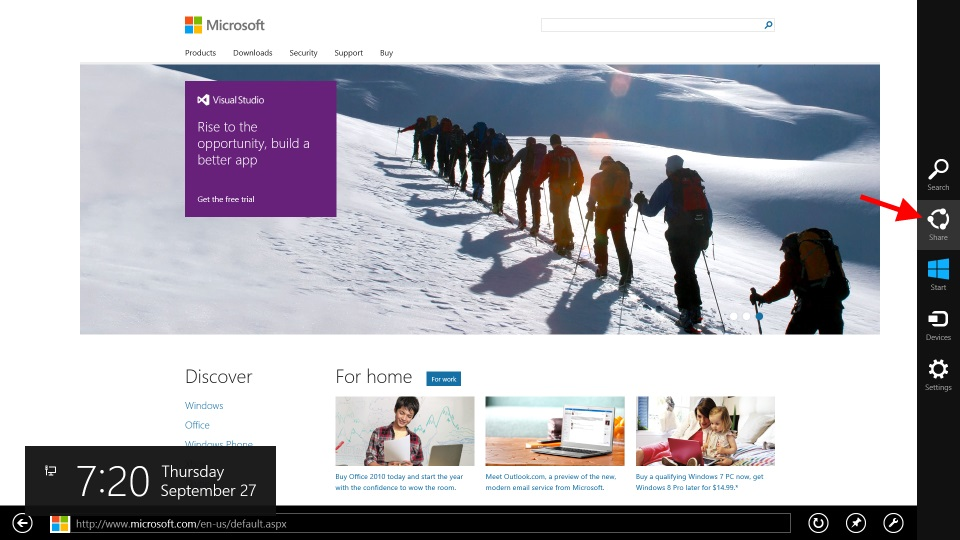

Share to QR code
This application is a share target for other applications. It allows you to easily share URLs from your computer to another device (such as a smart phone)
How to use
From within another application, open the charms bar and select "SHARE"
Here is an example of it being used within Internet Explorer to share a URL
